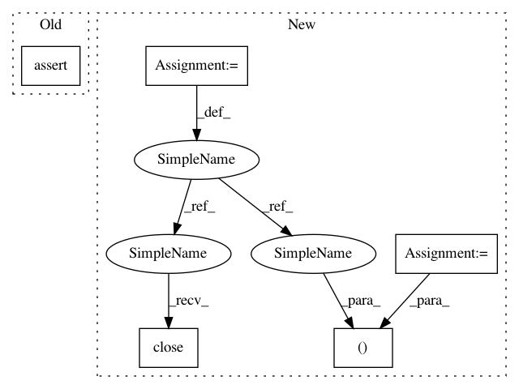

24cc9536e4969716b3080498426af8e47dee7907,tests/classifiers/test_tensorflow.py,TestTFClassifier,test_class_gradient,#TestTFClassifier#,102
Before Change
grads = self.classifier.class_gradient(x_test)
self.assertTrue(np.array(grads.shape == (NB_TEST, 10, 28, 28, 1)).all())
self.assertNotEqual(np.sum(grads), 0)
// Test 1 gradient label = 5
grads = self.classifier.class_gradient(x_test, label=5)
After Change
sess.close()
def test_class_gradient(self):
classifier, sess = get_classifier_tf()
// Test all gradients label = None
gradients = classifier.class_gradient(self.x_test)
self.assertTrue(gradients.shape == (NB_TEST, 10, 28, 28, 1))
expected_gradients_1 = np.asarray([-0.03347399, -0.03195872, -0.02650188, 0.04111874, 0.08676253, 0.03339913,
0.06925241, 0.09387045, 0.15184258, -0.00684002, 0.05070481, 0.01409407,
-0.03632583, 0.00151133, 0.05102589, 0.00766463, -0.00898967, 0.00232938,
-0.00617045, -0.00201032, 0.00410065, 0.0, 0.0, 0.0,
0.0, 0.0, 0.0, 0.0])
np.testing.assert_array_almost_equal(gradients[0, 5, 14, :, 0], expected_gradients_1, decimal=4)
expected_gradients_2 = np.asarray([-0.09723657, -0.00240533, 0.02445251, -0.00035474, 0.04765627, 0.04286841,
0.07209076, 0.0, 0.0, -0.07938144, -0.00142567, 0.02882954,
-0.00049514, 0.04170151, 0.05102589, 0.09544909, -0.04401167, -0.06158172,
0.03359772, -0.00838454, 0.01722163, -0.13376027, 0.08206709, 0.0,
0.0, 0.0, 0.0, 0.0])
np.testing.assert_array_almost_equal(gradients[0, 5, :, 14, 0], expected_gradients_2, decimal=4)
// Test 1 gradient label = 5
gradients = classifier.class_gradient(self.x_test, label=5)
self.assertTrue(gradients.shape == (NB_TEST, 1, 28, 28, 1))
expected_gradients_1 = np.asarray([-0.03347399, -0.03195872, -0.02650188, 0.04111874, 0.08676253, 0.03339913,
0.06925241, 0.09387045, 0.15184258, -0.00684002, 0.05070481, 0.01409407,
-0.03632583, 0.00151133, 0.05102589, 0.00766463, -0.00898967, 0.00232938,
-0.00617045, -0.00201032, 0.00410065, 0.0, 0.0, 0.0,
0.0, 0.0, 0.0, 0.0])
np.testing.assert_array_almost_equal(gradients[0, 0, 14, :, 0], expected_gradients_1, decimal=4)
expected_gradients_2 = np.asarray([-0.09723657, -0.00240533, 0.02445251, -0.00035474, 0.04765627, 0.04286841,
0.07209076, 0.0, 0.0, -0.07938144, -0.00142567, 0.02882954,
-0.00049514, 0.04170151, 0.05102589, 0.09544909, -0.04401167, -0.06158172,
0.03359772, -0.00838454, 0.01722163, -0.13376027, 0.08206709, 0.0,
0.0, 0.0, 0.0, 0.0])
np.testing.assert_array_almost_equal(gradients[0, 0, :, 14, 0], expected_gradients_2, decimal=4)
// Test a set of gradients label = array
label = np.random.randint(5, size=NB_TEST)
gradients = classifier.class_gradient(self.x_test, label=label)
self.assertTrue(gradients.shape == (NB_TEST, 1, 28, 28, 1))
expected_gradients_1 = np.asarray([0.06860766, 0.065502, 0.08539103, 0.13868105, -0.05520725, -0.18788849,
0.02264893, 0.02980516, 0.2226511, 0.11288887, -0.00678776, 0.02045561,
-0.03120914, 0.00642691, 0.08449504, 0.02848018, -0.03251382, 0.00854315,
-0.02354656, -0.00767687, 0.01565931, 0.0, 0.0, 0.0,
0.0, 0.0, 0.0, 0.0])
np.testing.assert_array_almost_equal(gradients[0, 0, 14, :, 0], expected_gradients_1, decimal=4)
expected_gradients_2 = np.asarray([-0.0487146, -0.0171556, -0.03161772, -0.0420007, 0.03360246, -0.01864819,
0.00315916, 0.0, 0.0, -0.07631349, -0.00374462, 0.04229517,
-0.01131879, 0.05044588, 0.08449504, 0.12417868, 0.07536847, 0.03906382,
0.09467953, 0.00543209, -0.00504872, -0.03366479, -0.00385999, 0.0,
0.0, 0.0, 0.0, 0.0])
np.testing.assert_array_almost_equal(gradients[0, 0, :, 14, 0], expected_gradients_2, decimal=4)
tf.reset_default_graph()
sess.close()
def test_loss_gradient(self):
classifier, sess = get_classifier_tf()
gradients = classifier.loss_gradient(self.x_test, self.y_test)
In pattern: SUPERPATTERN
Frequency: 3
Non-data size: 5
Instances
Project Name: IBM/adversarial-robustness-toolbox
Commit Name: 24cc9536e4969716b3080498426af8e47dee7907
Time: 2019-08-17
Author: beat.buesser@ie.ibm.com
File Name: tests/classifiers/test_tensorflow.py
Class Name: TestTFClassifier
Method Name: test_class_gradient
Project Name: IBM/adversarial-robustness-toolbox
Commit Name: 24cc9536e4969716b3080498426af8e47dee7907
Time: 2019-08-17
Author: beat.buesser@ie.ibm.com
File Name: tests/classifiers/test_tensorflow.py
Class Name: TestTFClassifier
Method Name: test_class_gradient
Project Name: IBM/adversarial-robustness-toolbox
Commit Name: 24cc9536e4969716b3080498426af8e47dee7907
Time: 2019-08-17
Author: beat.buesser@ie.ibm.com
File Name: tests/classifiers/test_tensorflow.py
Class Name: TestTFClassifier
Method Name: test_layers
Project Name: IBM/adversarial-robustness-toolbox
Commit Name: 24cc9536e4969716b3080498426af8e47dee7907
Time: 2019-08-17
Author: beat.buesser@ie.ibm.com
File Name: tests/classifiers/test_tensorflow.py
Class Name: TestTFClassifier
Method Name: test_loss_gradient